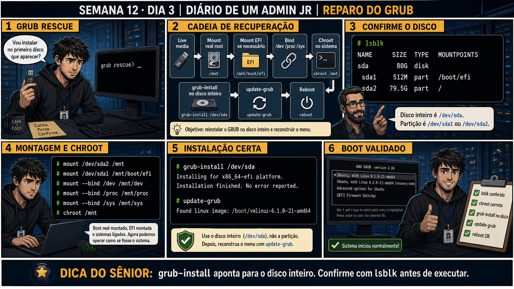

lsblk só de relance e reinstalou o GRUB apontando pro disco de DADOS por engano — os dois
discos tinham tamanhos parecidos e ele não conferiu qual era qual com calma. O comando "funcionou" sem
erro (grub-install não valida se aquele é o disco certo pro seu caso de uso, só se consegue escrever ali),
mas o boot continuou quebrado, porque o disco de sistema nunca recebeu o reparo. Só na segunda tentativa,
comparando o tamanho e os pontos de montagem no lsblk com cuidado, o disco certo foi identificado. A
correção não foi técnica — o comando era o certo desde o início — foi a disciplina de conferir CADA
detalhe do lsblk antes de rodar um comando que escreve no setor de boot de um disco inteiro, porque esse
comando não tem como saber qual disco você "quis dizer".
Semana 12 · Dia 3 | Nível Júnior
GRUB: Reparo via Live Media
grub-install aponta para o disco inteiro — confirme com lsblk antes de executar
ANTES DE ALTERAR, OBSERVE. DEPOIS DE ALTERAR, VALIDE.
1. O chamado
#7523
PRIORIDADE CRÍTICA
13:10
aberto por: monitoramento
host: srv-app-10 · serviço: boot — GRUB ausente
"Tela mostra apenas grub rescue>, sem menu. Servidor não inicializa de jeito nenhum."
"Vou instalar no primeiro disco que aparecer?" — antes de qualquer grub-install, o que precisa ser montado primeiro?
💡 Passa o mouse nas palavras destacadas pra ver uma dica rápida — clica se quiser a explicação completa com analogia.
2. O sênior te conta
Semana passada, outro ticket
Um servidor com dois discos (um de sistema, outro de dados) apresentou GRUB corrompido depois de uma
queda de energia. Um admin júnior, apressado pra resolver rápido, entrou no live media, rodou
3. Decodificador de conceitos
Clica em qualquer termo pra ver a definição completa e uma analogia do dia a dia:
4. Ferramentas e leitura da evidência
| Comando | O que observar e por que importa |
|---|---|
lsblk | Confirma qual é o disco inteiro e quais são suas partições, antes de qualquer ação. |
mount --bind /dev /mnt/dev (e /proc, /sys) | Liga os sistemas virtuais do live media ao ambiente chroot — sem isso, muitos comandos falham dentro do chroot. |
chroot /mnt | Faz você operar como se estivesse dentro do sistema instalado, não do live media. |
grub-install /dev/sda | Reinstala o GRUB no setor de boot do disco inteiro. |
update-grub | Reconstrói o menu do GRUB a partir dos kernels instalados. |
# lsblk NAME SIZE TYPE MOUNTPOINTS sda 80G disk ├─sda1 512M part /boot/efi └─sda2 79.5G part / # mount /dev/sda2 /mnt # mount /dev/sda1 /mnt/boot/efi # mount --bind /dev /mnt/dev # mount --bind /proc /mnt/proc # mount --bind /sys /mnt/sys # chroot /mnt # grub-install /dev/sda Installing for x86_64-efi platform. Installation finished. No error reported. # update-grub Found linux image: /boot/vmlinuz-6.1.0-21-amd64
5. Laboratório guiado — marca conforme for testando
Segurança: execute os testes apenas em VM descartável e confirme nomes de discos, hosts e arquivos antes de cada comando.
- Ação: em VM de laboratório, simule um GRUB corrompido (ou pratique o fluxo com uma VM já iniciada via live media) e rode lsblk.$ lsblk NAME SIZE TYPE MOUNTPOINTS sda 80G disk ├─sda1 512M part /boot/efi └─sda2 79.5G part /Resultado esperado: disco inteiro e partições listados com clareza, ex: sda, sda1, sda2.Por quê: lsblk é a única fonte confiável de qual dispositivo é o disco inteiro e quais são partições — nunca assumir de memória.
- Ação: monte a partição raiz em /mnt e a EFI em /mnt/boot/efi (se aplicável ao seu layout).$ mount /dev/sda2 /mnt $ mount /dev/sda1 /mnt/boot/efiResultado esperado: ambas montadas sem erro.
- Ação: faça mount --bind de /dev, /proc e /sys para dentro de /mnt, e entre com chroot /mnt.$ mount --bind /dev /mnt/dev $ mount --bind /proc /mnt/proc $ mount --bind /sys /mnt/sys $ chroot /mntResultado esperado: prompt muda, indicando que você está operando dentro do sistema instalado.Cilada comum: pular direto pro chroot sem as montagens bind — comandos como grub-install podem falhar de forma confusa sem /dev, /proc e /sys disponíveis.🧑🏫 Aqui entra o Mentor (em breve): se algum comando dentro do chroot reclamar de dispositivo ou arquivo ausente, este é o ponto onde o chat com o Sênior-IA vai ajudar a checar as montagens bind.
Se o seu resultado foi diferente
esqueceu de montar um dos três (/dev,/procou/sys) antes do chroot → o chroot entra normalmente, mas comandos comogrub-installfalham com erros estranhos de I/O ou "cannot find a device" — sempre monte os três antes de entrar nochroot /mnt. - Ação: rode grub-install /dev/sda (disco inteiro) e depois update-grub, ainda dentro do chroot.# grub-install /dev/sda Installing for x86_64-efi platform. Installation finished. No error reported. # update-grub Found linux image: /boot/vmlinuz-6.1.0-21-amd64Resultado esperado: "Installation finished. No error reported" e o menu reconstruído.
Se o seu resultado foi diferente
instalar sem querer em/dev/sda1(uma partição) em vez de/dev/sda(o disco inteiro) →grub-installsempre aponta pro DISCO inteiro, nunca para uma partição específica — mesmo em sistemas com partição EFI separada. Confirme comlsblkantes de rodar, sempre no nome do disco, sem número no final. - Ação: saia do chroot, desmonte tudo na ordem inversa, remova a mídia e reinicie para validar o boot real.# exit $ umount /mnt/sys /mnt/proc /mnt/dev /mnt/boot/efi /mnt $ rebootResultado esperado: menu do GRUB aparece normalmente e o sistema inicia, reproduzindo o painel 6 da prancha de hoje.
6. Antes de ver as opções — tenta responder
🧠 Recall ativo: qual é a sequência completa de recuperação de um GRUB corrompido, do live media até
o reboot validado?
Live media → montar a raiz real → montar EFI se necessário → bind /dev /proc /sys →
chroot
no sistema → grub-install no disco inteiro → update-grub → reboot. Cada etapa prepara a próxima —
pular uma quebra a cadeia inteira.
7. Questão comentada — clica numa alternativa
Você já está dentro do chroot, pronto pra reinstalar o GRUB. lsblk mostra sda
(disco, 80G), sda1 (partição, 512M, /boot/efi) e sda2 (partição, 79.5G, /). Onde o grub-install deve
apontar?
💡 Analogia do Sênior para Fixar: O comando 'chroot /mnt' usando um pendrive Live é como o médico entrando na cabine do paciente: permite que você opere dentro do sistema quebrado como se estivesse logado nele.
7.1 Você reinstalou o GRUB e rodou update-grub, ainda dentro do chroot
O trabalho parece feito, mas você ainda está no ambiente do live media.
O que falta antes de considerar o reparo concluído?
💡 Analogia do Sênior para Fixar: Montar os diretórios virtuais (/dev, /proc, /sys) com 'mount --bind' antes do chroot é fornecer oxigênio e instrumentos cirúrgicos para o ambiente de reparo.
7.2 "Por que precisa fazer mount --bind de /dev, /proc e /sys antes do chroot?"
Um colega tenta pular direto pro chroot sem essas montagens extras, achando que são desnecessárias.
Por que essas montagens são necessárias antes do chroot funcionar corretamente?
💡 Analogia do Sênior para Fixar: O comando 'grub-install /dev/sda' reinstala o código de inicialização no setor MBR/EFI do disco: conserta o apontador de boot destruído por quedas de energia.
8. Procedimento profissional
- Inicialize pela mídia externa (live media) quando o GRUB estiver corrompido.
- Confirme discos e partições com lsblk antes de montar qualquer coisa.
- Monte a raiz real, a EFI se necessário, e faça bind de /dev, /proc, /sys.
- Entre em chroot e rode grub-install apontando para o DISCO INTEIRO, nunca uma partição.
- Rode update-grub, saia do chroot, desmonte tudo e reinicie para validar.
Prevenção
Em servidores com múltiplos discos parecidos em tamanho, adicione ao runbook de reparo de
GRUB um passo explícito de "confirmar o disco pelo ponto de montagem ou label, não só pelo nome" — por
exemplo, comparar
lsblk -f (que mostra labels e UUIDs) em vez de confiar só no nome sda/sdb,
que pode ser ambíguo entre discos de tamanho similar.9. Validação e encerramento
- lsblk confirmou disco inteiro versus partições antes de qualquer comando.
- As montagens bind (/dev, /proc, /sys) foram feitas antes do chroot.
- grub-install apontou para o disco inteiro, nunca uma partição.
- O reboot final confirmou o reparo — não apenas as mensagens de sucesso dos comandos.
Rollback e limites
Reinstalar o GRUB não é destrutivo para os dados do sistema — ele reescreve o
setor de boot, não o conteúdo das partições. Ainda assim, confirme o disco certo com lsblk sempre antes de
rodar grub-install, porque apontar para o disco errado pode sobrescrever o boot de outro sistema.
💡 Sobre repetição espaçada: "confirme o disco inteiro versus a partição" é
uma variação do mesmo cuidado da Semana 5 (confirmar o dispositivo certo antes de qualquer comando destrutivo
em disco) — mesma disciplina, contexto diferente. O Anki vai conectar os dois.
10. Resposta final
Alternativa correta: A. Nesta aula, o alvo correto foi grub-install
/dev/sda — o disco inteiro, nunca uma partição específica. O ponto central do caso é este: grub-install
aponta para o disco inteiro — confirme com lsblk antes de executar.
🔓 O que você desbloqueou hoje
Capacidade de reparar um GRUB corrompido via live media e chroot, com o cuidado
de apontar sempre pro disco certo. Amanhã o cenário muda: não é o GRUB que quebrou, é uma atualização de
kernel que causou pane — e o GRUB guarda a solução, se você souber onde procurar.